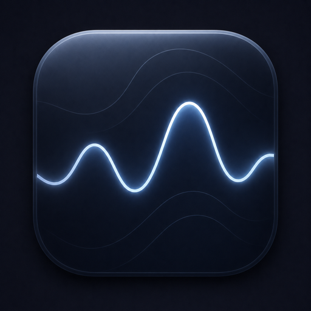

SHLabs builds instruments at the intersection of musical use, real computation, and unusual control surfaces. The current catalog is built for VCV Rack 2; VST plugins and Ableton-compatible standalones are in development.
Each family is a coherent design programme. Click through for details, screenshots, install instructions, and source.
Real statistical, social, and stochastic processes turned into control voltage — sampling distributions, the bootstrap, agent-based cascades, epidemics, reaction-diffusion. Quirky, generative patch material with genuinely correct math underneath. (Teaching stats? That's the Empiria web app.)
Eight sound-design modules with a deliberate Eastern-bloc analog character, shaped by the West Coast tradition of complex oscillators and function generators: drum voices, oscillators, a master clock, a plate reverb, and generative sequencers. Built for fun and for getting weird.
Emergent systems you watch evolve on screen and patch as CV. Colony is a cellular-automaton grid; Turing is a probabilistic shift-register sequencer with a built-in quantizer. Set them running, nudge them, and take the patterns as pitch, gates, and modulation.
Four tempo-synced effects: a rhythmic amplitude gate, a stereo ping-pong delay, a multi-tap pattern delay, and a crossfader. Lock them to your clock for movement in time and across the stereo field. Free to download and use.
A transistor-ladder filter (Helix), a stereo color repeater (Halo), a character delay with reverb (Skywave), and an eight-stage step sequencer (Metro185).
Tools outside the VCV families — the start of the SHLabs DAW branch, plus one-off standalone experiments.

Draw modulation on a curve editor and lock it to the beat — four curve-LFOs shaping volume, pan and filter, with multiband routing, envelope triggering and MIDI output. VST3 · AU · Standalone.
A gestural, multi-voice granular sampler: record into a buffer and steer six grain voices with an on-panel XY field. Released as a standalone experiment.
Generative modules are seedable, so a happy accident is never lost — stumble onto a sound you love and dial the exact patch back any time. Save it, share it, and it plays the same on every machine.
Panels are designed as control surfaces, not decoration — polyphonic CV everywhere it makes sense, sensible defaults, and no telemetry. Tools you patch in and play, not just admire.
Under the hood the processes are the real thing — feedback, sampling, stochastic motion — but every module is voiced as an instrument first: expressive, surprising, and made to be listened to, not measured.